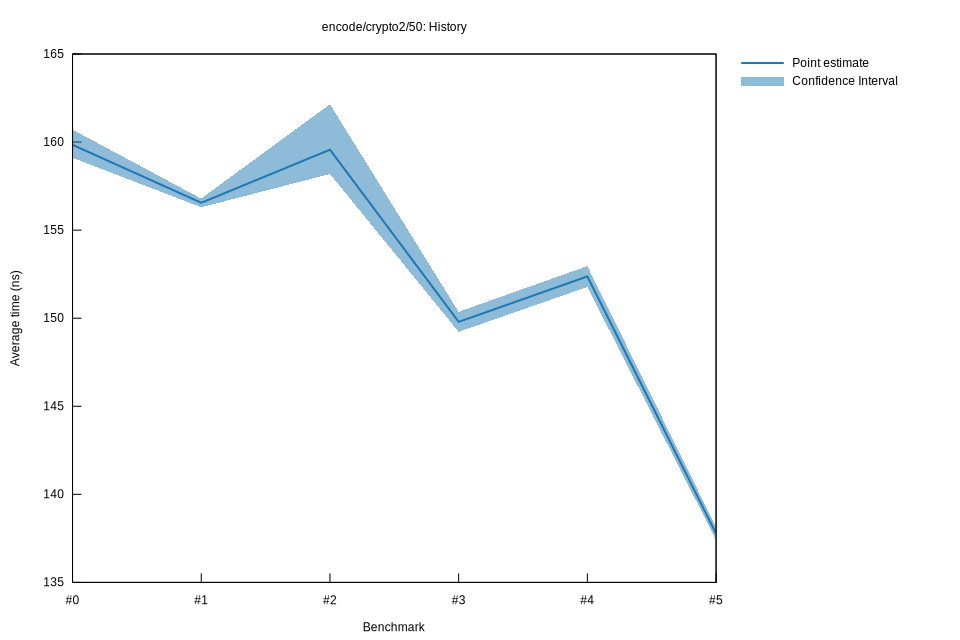

# 52022-10-16T20:02:28+03:00
|
Lower Bound |
Estimate |
Upper Bound |
| Value: |
137.41ns |
137.77ns |
138.14ns |
| Throughput: |
353.96MiB/s |
353.04MiB/s |
352.09MiB/s |
| Change in Value: |
-10.012% |
-9.6052% |
-9.1728% |
| Change in Throughput: |
+11.125% |
+10.626% |
+10.099% |
No change in performance detected.
# 42022-10-16T17:22:30+03:00
|
Lower Bound |
Estimate |
Upper Bound |
| Value: |
151.77ns |
152.37ns |
152.96ns |
| Throughput: |
320.46MiB/s |
319.20MiB/s |
317.98MiB/s |
| Change in Value: |
+0.6871% |
+1.3595% |
+1.9593% |
| Change in Throughput: |
-0.6824% |
-1.3412% |
-1.9216% |
No change in performance detected.
# 32022-10-15T17:14:12+03:00
|
Lower Bound |
Estimate |
Upper Bound |
| Value: |
149.23ns |
149.79ns |
150.36ns |
| Throughput: |
325.93MiB/s |
324.70MiB/s |
323.47MiB/s |
| Change in Value: |
-6.4470% |
-5.5461% |
-4.8651% |
| Change in Throughput: |
+6.8913% |
+5.8717% |
+5.1139% |
No change in performance detected.
# 22022-10-15T16:49:24+03:00
|
Lower Bound |
Estimate |
Upper Bound |
| Value: |
158.19ns |
159.57ns |
162.15ns |
| Throughput: |
307.46MiB/s |
304.81MiB/s |
299.96MiB/s |
| Change in Value: |
+0.8048% |
+1.3434% |
+2.1358% |
| Change in Throughput: |
-0.7984% |
-1.3256% |
-2.0912% |
No change in performance detected.
# 12022-10-08T17:26:10+03:00
|
Lower Bound |
Estimate |
Upper Bound |
| Value: |
156.30ns |
156.55ns |
156.80ns |
| Throughput: |
311.19MiB/s |
310.68MiB/s |
310.20MiB/s |
| Change in Value: |
-3.3177% |
-2.4511% |
-1.7093% |
| Change in Throughput: |
+3.4315% |
+2.5127% |
+1.7390% |
No change in performance detected.
# 02022-10-08T17:07:08+03:00
|
Lower Bound |
Estimate |
Upper Bound |
| Value: |
159.11ns |
159.84ns |
160.71ns |
| Throughput: |
305.69MiB/s |
304.28MiB/s |
302.65MiB/s |